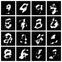
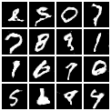
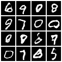

A hands-on project building and deploying 5 generative AI models progressively as production-style REST APIs. From word embeddings and image classifiers to GANs, diffusion models, energy-based models, and RL post-training of GPT-2 to align its output format.
Overview
| # | Model | Task | Stack |
|---|---|---|---|
| 1 | spaCy Embeddings | Word & sentence vector API | spaCy, FastAPI |
| 2 | CNN (CIFAR-10) | Image classification API | PyTorch, FastAPI |
| 3 | GAN (MNIST) | Handwritten digit generation | PyTorch, FastAPI |
| 4 | Diffusion + EBM | Advanced image synthesis on CIFAR-10 | PyTorch, FastAPI |
| 5 | RL post-trained GPT-2 | Format-constrained text generation | Transformers, FastAPI, Docker |
Assignment 3
Implemented a Generative Adversarial Network from scratch in PyTorch and trained it on the MNIST dataset. The generator learns to produce realistic 28x28 handwritten digit images from random noise vectors. The trained model is served via a FastAPI endpoint that returns a PNG image grid on demand.
Training progression shows the generator improving from blurry noise to recognizable digits over 15 epochs:



curl "http://localhost:8001/generate?n=16" --output digits.png
Assignment 4
Implemented two advanced generative models on CIFAR-10. The DDPM diffusion model learns to reverse a noise process over 1000 timesteps to synthesize 32x32 images. The energy-based model assigns scalar energy scores to images (lower energy indicates more realistic samples) and uses gradient descent on the input (not the weights) to generate low-energy images.
curl -X POST http://localhost:8002/diffusion/generate \
-H "Content-Type: application/json" \
-d '{"num_samples": 8}'
# Response
{"num": 8, "mean": -0.012, "std": 0.943}
curl -X POST http://localhost:8002/energy/score \
-H "Content-Type: application/json" \
-d '{"batch": 4}'
# Response (lower energy = more realistic)
{"scores": [2.31, 4.87, 1.95, 3.42]}
Assignment 5
Fine-tuned GPT-2 using reinforcement learning to follow a strict output format: every response must start with "That is a great question" and end with "Let me know if you have any other questions." A reward function scores each response 0-100 based on format compliance (50 points per constraint). This mirrors RLHF techniques used to align large language models like ChatGPT.
curl -X POST http://localhost:8003/answer \
-H "Content-Type: application/json" \
-d '{"question": "What is a diffusion model?"}'
{
"question": "What is a diffusion model?",
"answer": "That is a great question. A diffusion model is the simulation of the human brain by machines. Let me know if you have any other questions.",
"has_start": true,
"has_end": true,
"score": 100
}